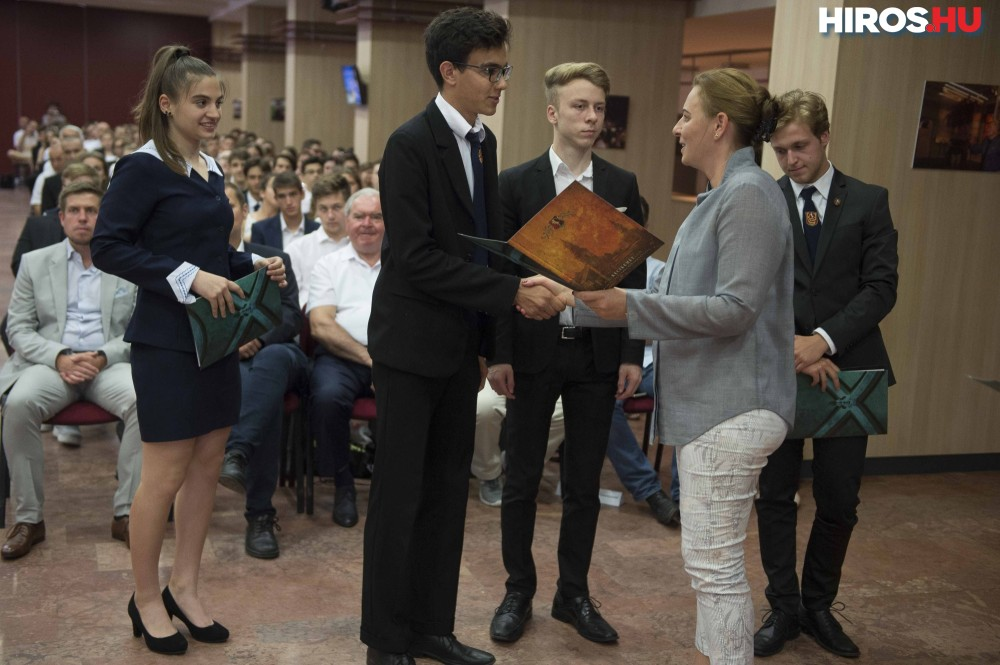

Tanulmányi eredményeim
Mint azt már korábban említettem több tárgyból is értem el szebb, meg persze kevésbé szebb, eredményeket is, sokukra kimondottan büszke vagyok!
Fizika
- Eötvös-verseny dícséret (2020)
- 100%-os emelt érettségi (2020)
- Náboj verseny országos 3. hely (2019)
- Bács-Kiskun megyei fizikaverseny 3. Hely (2017, 2019)
Matek
- Bolyai verseny országos legjobb 3 (2021)
- Bács-Kiskun megyei matekverseny 5. hely (2020, 2018)
Angol
- Felsőfokú nyelvvizsga (2020)
Környezetvédelem
- Curie környezetvédelmi verseny országos 2. és 3. (2016, 2018)
Elismerések
- Kecskemét város középiskolás kiválósága (2017, 2019)

Díjátadón
Sok versenyen indultam az évek során, azonban sajnos említésre méltóak csak a fenn említett eredményeim voltak.